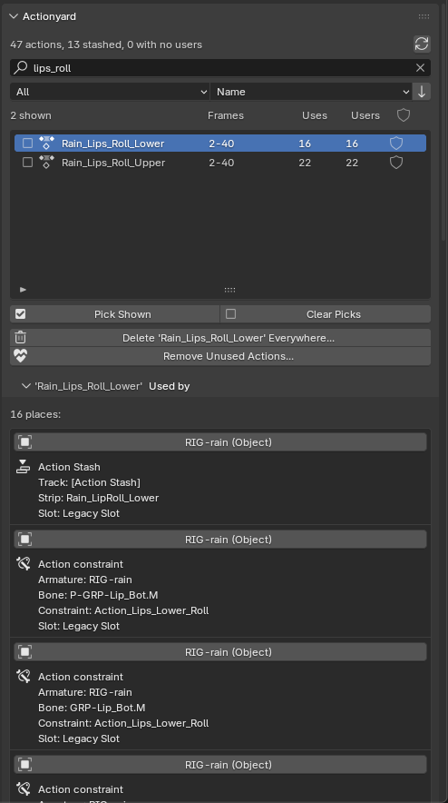
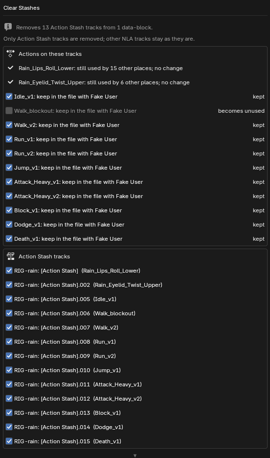

Actionyard quick start
Installing Actionyard and your first clean-up. The full manual, README.md, is inside the download. Back to the Actionyard product page.
Install (Blender 4.4 or newer; tested on 4.4, 4.5 LTS and 5.2 LTS)
- Download
actionyard-1.4.2.zip. Install the zip itself; do not unzip it first. (To read the manual, open the zip; it isREADME.mdinside.) - In Blender, open Edit > Preferences > Add-ons.
- Open the drop-down menu (⌄) at the top right of the Add-ons page, choose Install from Disk... and pick the zip. The status bar says
Installed "actionyard", and Actionyard is enabled straight away. Its entry reads "Action Stash clean-up and action users, in the NLA sidebar (N)". - Open an NLA editor or a Dope Sheet, press N for the sidebar and click the Actionyard tab. The sidebar starts narrow, so the list shows Name, Uses and Fake User, and Used by shows the clicked action's frames and users. Drag the sidebar's left edge to widen it for the Frames and Users columns.
On the Add-ons page Blender asks nothing about internet access and shows no Repository Alert. Get Extensions has the same Install from Disk. If you use it, Blender may first ask about internet access (Continue Offline is fine; Actionyard needs no internet) and then show a red Repository Alert saying the extensions.blender.org data is unavailable. That is Blender's note about its online catalogue, not an error in Actionyard.
Upgrading: install the new zip the same way; it replaces the old version. If Blender shows an error, remove Actionyard in Preferences > Add-ons, restart Blender, then install the new zip.
A first clean-up
- Set the list to Stashed (the Show menu under the list, next to the search field) to see which actions live in stashes. The line above the list counts the actions in the file, the stashed ones and the ones with no users.
- Click an action to see its Used by places: is it still the active action somewhere, on an NLA track, or in an Action constraint? Each place is the object's name, then a line with its role and a line with its slot when it has one; hover the name for the track, strip, bone and constraint. Shape keys and materials are named by their object, as in "Kit_Head (shape keys)". Click the name to select that object and make it active. On a short screen the list shows fewer rows (drag its grip to make it taller), so Used by stays in view.

Used by on one of Rain's face actions: one Action Stash and 15 Action constraints (Blender 4.5, real size). - In Action Stashes, choose Active Object or Whole File and click Clear Stashes... Under the button, click the line "N Action Stash tracks" to list them in the sidebar (up to 5 per object, then "+N more in Clear Stashes..."). Nothing changes until you confirm. The preview shows:
- how many stash tracks go, from how many objects or other data-blocks, and how many are empty. An empty stash track is what Blender leaves behind when a stashed action is deleted the plain way; it is listed as "empty, from a deleted action" and cleared with the rest;
- each action on them, with what will happen to it on the right. An action that something else still uses reads "still used by N other places; no change". An action you already gave a Fake User reads "already has a Fake User; stays". Every other action has a tick: ticked, it "will be kept (Fake User)"; unticked, it is "left with no users". The ticks start ticked every time the dialog opens, also after Ctrl+Z. Keep None unticks them all at once; the button then reads Keep All. With a name typed in the list's filter (the small triangle under it), the button reads Keep None Shown and changes only the rows you see;
- under the actions, Also delete these N actions from the file: tick it, and the unticked actions "will be deleted" in the same step; the headline at the top then ends "and deletes N actions". It starts unticked;
- the tracks, grouped under their object, action name first and the track's suffix after it, each with its own tick: "will be removed" or "stays". A stash track you have unmuted plays in your animation, so it reads "unmuted, plays; stays" and starts unticked. An object in NLA tweak mode keeps its stash tracks: they are listed as "left alone (NLA tweak mode is on; exit it first)" and not counted. Exit tweak mode with Tab in the NLA editor.
- With many stashes, both lists scroll (8 rows each), so Clear Stashes and Cancel stay on screen. Return confirms.

The preview on Rain's file, with one take unticked. - Confirm. The status bar says what changed, and the details go to a text block named Actionyard Report.txt (open it in the Text Editor; it opens on the newest section). Only Action Stash tracks are removed; your other NLA tracks stay as they are.
- Changed your mind? One Ctrl+Z undoes the whole operation. If you opened the Actionyard Report in a Text Editor afterwards, Blender counts that as an undo step of its own: press Ctrl+Z once more, or pick the operation in Edit > Undo History.
- If you untick actions without the delete option, they stay in the file with no users: run Remove Unused Actions..., or save and reopen the file (Blender drops data with no users when it saves).
Character in the images: Rain Rig (CC) Blender Foundation | studio.blender.org, used under CC BY 4.0, with game actions and stashed takes we added. Rain is not included with Actionyard.
Deleting actions for good
- Old takes on stash tracks: in the Clear Stashes preview, click Keep None and tick Also delete these N actions from the file, then confirm. The stash tracks and the takes go in one step; takes with a Fake User you set stay. One Ctrl+Z brings it all back.
- Delete Action Everywhere...: tick actions in the Pick column at the left of the list (or just click one). The preview lists every place that will lose each action, in one list that scrolls, so Delete Everywhere and Cancel stay on screen however many you pick. If nothing you picked can be deleted (for example, it is on a locked NLA track, or its object is in NLA tweak mode), it says why and offers no Delete button. Otherwise Actionyard removes each action from all of those places and from the file, in one undo step. The active action is cleared, NLA and stash strips are removed (a stash track left empty is removed too), and Action constraints are kept but lose their action.
- Remove Unused Actions...: deletes actions with no users. It keeps Fake User actions unless you tick "Also Fake User Actions", and always keeps actions marked as assets (pose library poses). Its preview lists every action it will delete; with nothing to delete, a popup says "Nothing to remove" and offers no Remove button.
Deleting a stashed action as a data-block instead (what the Outliner's Delete does) removes the action but leaves its [Action Stash] track behind, holding a strip with no action. Delete Action Everywhere removes the track too, and Clear Stashes clears such empty tracks if you already have them.
Words used here
- Action Stash: a muted NLA track named "[Action Stash]" that keeps an action in the file. Blender's Stash operator makes one, and so does New Action for the previous take. Actionyard uses Blender's own rule: any track whose name contains "[Action Stash]" counts, including one you named that way yourself.
- Uses and Users: Uses is the number of places Actionyard lists under Used by; Users is Blender's own user count, which also counts the Fake User.
- Slot: since Blender 4.4, one action can hold animation for several data-blocks, one slot each.
Limits
- Requires Blender 4.4 or newer. Tested on Blender 4.4, 4.5 LTS and 5.2 LTS, on Linux; Windows and macOS have not been tested yet.
- If the search or a filter hides the action you clicked, Used by says so instead of showing it.
- Linked data, and everything a library override takes from its library file, is shown with a lock and never changed. Stash tracks you added on an override in your own file can be cleared.
- Delete Action Everywhere leaves an action alone when one of its strips is on a locked NLA track (not a stash track); unlock the track first.
- A data-block in NLA tweak mode is left alone, and both previews say so; exit tweak mode first. A strip inside a meta strip loses its action but stays in the meta strip.
- The Actionyard Report.txt text block grows with every change (selecting from Used by is not logged). Delete it whenever you like; it is made again on the next change.
- No onion skins, no channel locking. English only.
Privacy
Actionyard makes no network calls and collects nothing. It changes only the open .blend file, and only when you run one of its operators.
Support
Email support@ochrestack.com with your Blender version, your system, the lines from the Actionyard Report.txt text block and, if you can, a small .blend file that shows the problem.